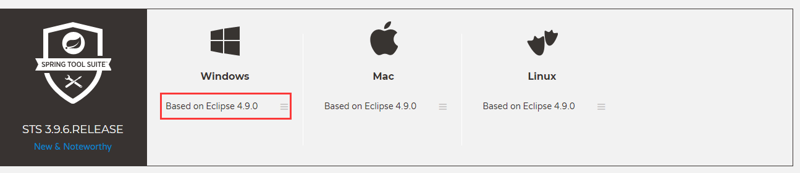
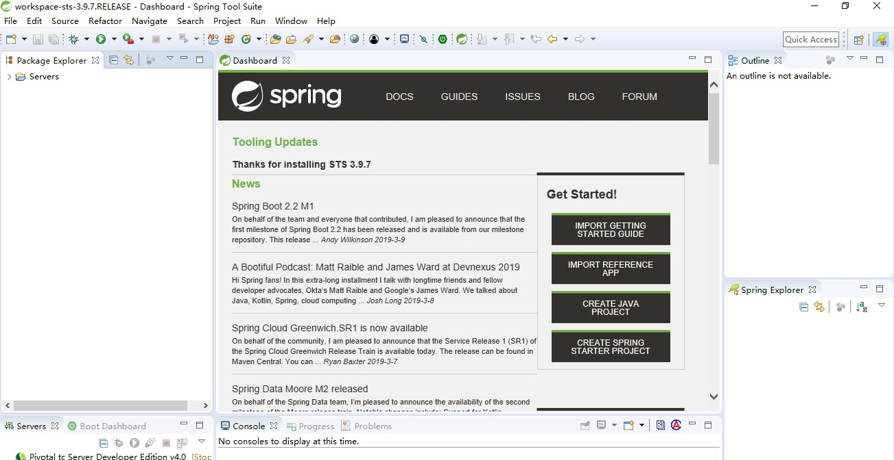
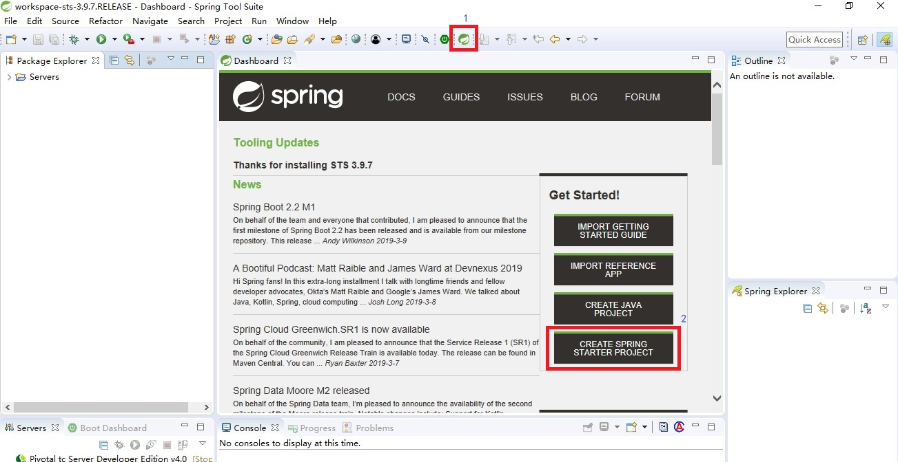
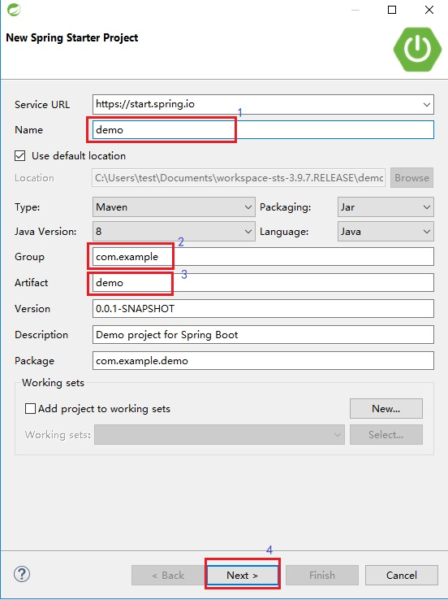
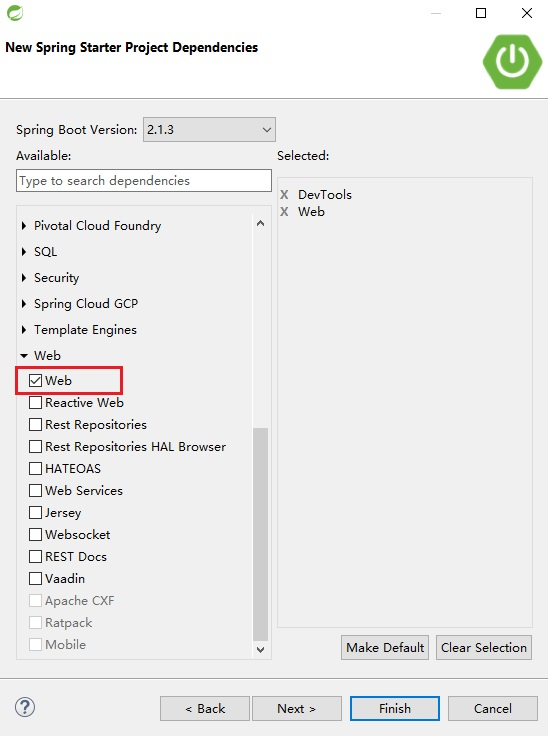
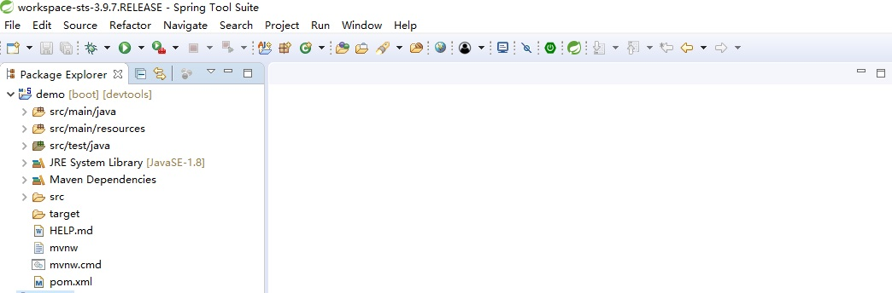
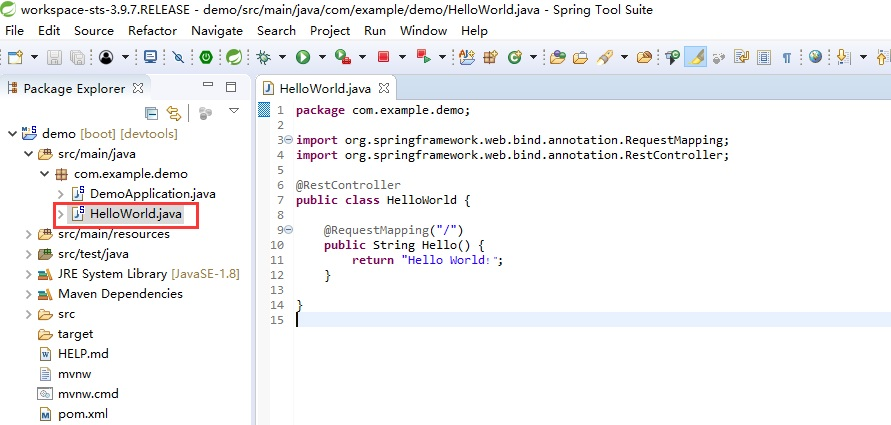
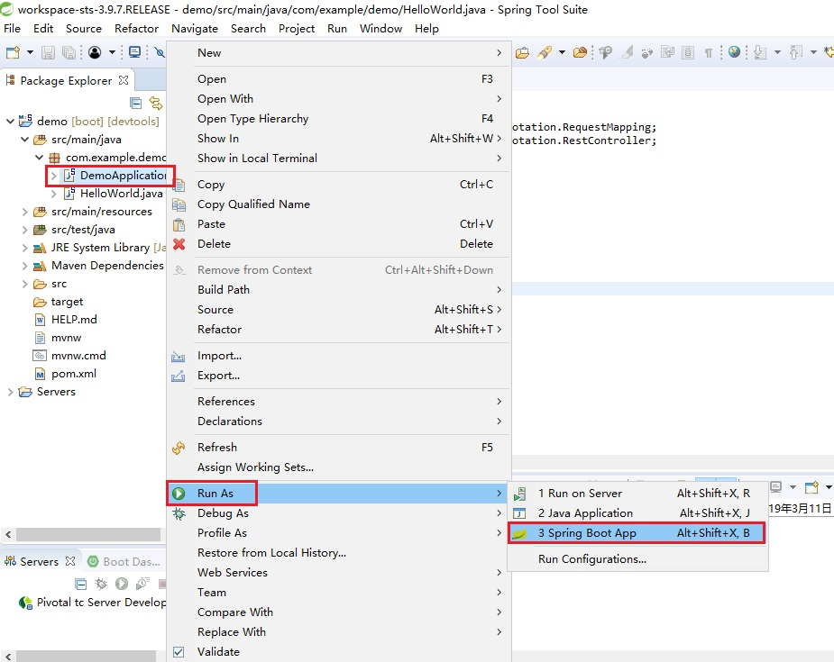
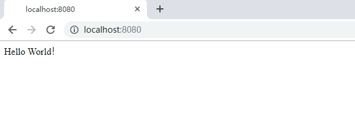

本机环境： java JDK8
https://spring.io/tools3/sts/legacy

sts-bundle\sts-3.9.7.RELEASE\STS.exe

打开 Dashboard,点击 CREATE SPRING STARTER PROJECT

进入 New Spring Starter Project,设置项目名称(Name)、项目 maven 坐标(Group、Artifact),点击 Next

进入 New Spring Starter Project Dependencies,选择项目依赖 jar 包

点击 Finish,进入项目

新建 HelloWorld.java，输入如下代码：
package com.example.demo;
import org.springframework.web.bind.annotation.RequestMapping;
import org.springframework.web.bind.annotation.RestController;
@RestController
public class HelloWorld {
@RequestMapping("/")
public String Hello() {
return "Hello World！";
}
}

选中 DemoApplication.java，右键 Run As -> Spring Boot App 
浏览器输入：http://localhost:8080/ 
完